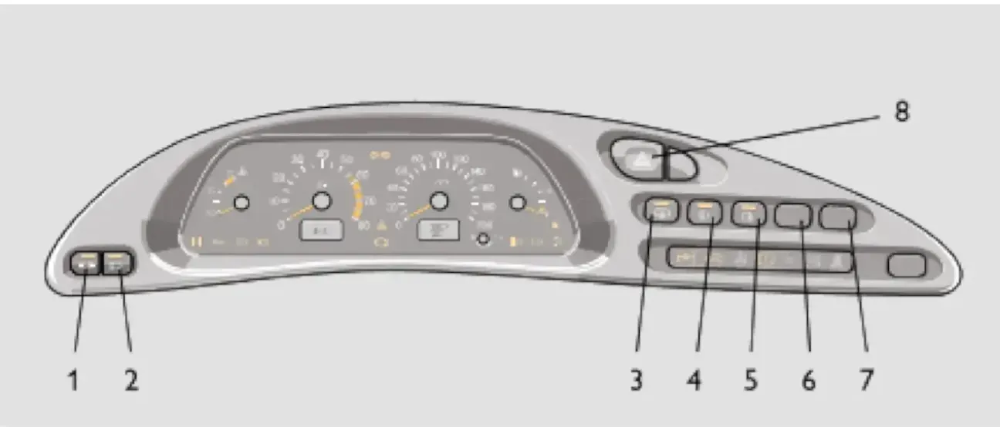

ОПИСАНИЕ АВТОМОБИЛЯ — II. Органы управления и приборы
Кнопочные выключатели
светфарыпротивотуманныеобогреваварийкагабариты
На рисунке 18 показано размещение кнопочных выключателей. При включенном наружном освещении символика клавиш подсвечивается.

| Выключатель | Описание |
|---|---|
| 1. Габаритные огни | Включаются и выключаются последовательным нажатием на клавишу. При включении габаритных огней загорается световой сигнализатор в самой клавише. |
| 2. Свет фар | При нажатии на клавишу включаются фары. Выключатели габаритных огней и света фар объединены в «переключатель наружного освещения». Механическая связь исключает возможность включения фар без предварительного включения габаритных огней. |
| 3. Обогрев заднего стекла | Включается нажатием на клавишу выключателя и отключается при повторном нажатии. О включенном обогреве сигнализирует световой индикатор в самой клавише. |
| 4. Передние противотуманные фары | Устанавливаются на автомобилях с противотуманными фарами. Включаются в условиях ограниченной видимости (снег, туман и т.д.) нажатием на клавишу при включенных габаритных огнях. При повторном нажатии — отключаются. |
| 5. Задние противотуманные огни | Нажатием на клавишу включаются противотуманные огни в задних фонарях, если включены фары. При выключении зажигания противотуманные огни в задних фонарях выключаются автоматически. |
| 6. Фароочистка | Устанавливается на автомобилях, оборудованных фароочисткой и фароомывом. При включенном свете фар нажатием кнопки одновременно включаются омыватели и очистители фар. |
| 8. Аварийная сигнализация | При нажатии на клавишу включается мигающий свет всех указателей поворота. При повторном нажатии — сигнализация отключается. |
Примечание:
Сигнал о включенном наружном освещении также сопровождается звуковым предупреждением: если зажигание выключено, ключ вынут из замка, и при открывании двери водителя зуммер издаёт два звуковых сигнала, если остались включенными лампы габаритных огней.
Сигнал о включенном наружном освещении также сопровождается звуковым предупреждением: если зажигание выключено, ключ вынут из замка, и при открывании двери водителя зуммер издаёт два звуковых сигнала, если остались включенными лампы габаритных огней.